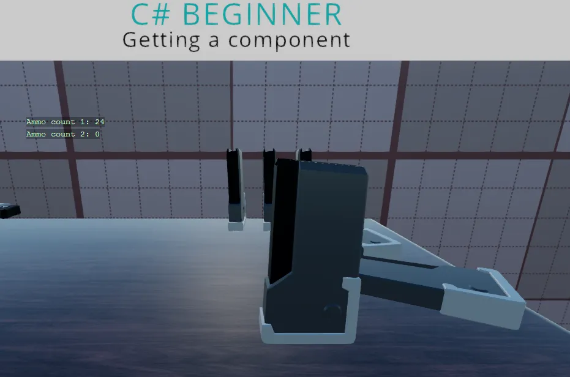

Getting a component
You can find this sample in the tutorial project: Menu → Getting a component
Explanation
This C# beginner tutorial covers how to get and remove components.
Components are one of the most important concepts in Stride. Every entity in the scene has a list of components. The transform for instance is also a component.
When we make custom scripts that inherit from SyncScript or AsyncScript, they turn into Components that we can attach to entities. We can attach these components to entities by using the editor or we can attach them by code.

Code
AmmoComponent
This is the first component that we attach to an entity. In the second script, we will try to get this AmmoComponent.
using Stride.Engine;
namespace CSharpBeginner.Code
{
/// <summary>
/// This script is used in combination with the GettingAComponent.cs script
/// </summary>
public class AmmoComponent : StartupScript
{
private readonly int maxBullets = 30;
private readonly int currentBullets = 12;
public override void Start() { }
public int GetRemainingAmmo()
{
return maxBullets - currentBullets;
}
}
}
Getting A Component
This component script, will retrieve the AmmoComponent script above and use its public method.
using Stride.Core.Mathematics;
using Stride.Engine;
namespace CSharpBeginner.Code
{
/// <summary>
/// This script demonstrates how to get and remove components that are attached to an entity.
/// Try not to Get a component every frame as this will have negative performance impact.
/// Instead try to cache a component in the start method or when an object is initialized/triggered
/// <para>
/// https://doc.stride3d.net/latest/en/tutorials/csharpbeginner/get-component.html
/// </para>
/// </summary>
public class GettingAComponentDemo : SyncScript
{
private int ammoCount1 = 0;
private int ammoCount2 = 0;
public override void Start()
{
// We retrieve the Ammo component that is also attached to the current entity
var ammoComponent1 = Entity.Get<AmmoComponent>();
// We can now access public methods and properties of the retrieve component
ammoCount1 = ammoComponent1.GetRemainingAmmo();
// We now remove the AmmoComponent from our entity. If we try to retrieve it again, null will be returned
Entity.Remove<AmmoComponent>();
var ammoComponent2 = Entity.Get<AmmoComponent>();
// Now that 'ammoComponent' is null, we will never be able to retrieve the total ammo
if (ammoComponent2 != null)
{
// This line will never happen
ammoCount2 = ammoComponent2.GetRemainingAmmo();
}
// Add the component again so that it doesn't crash next run
Entity.Add(ammoComponent1);
}
public override void Update()
{
// We display the stored ammo count on screen
DebugText.Print("Ammo count 1: " + ammoCount1.ToString(), new Int2(300, 200));
DebugText.Print("Ammo count 2: " + ammoCount2.ToString(), new Int2(300, 220));
}
}
}